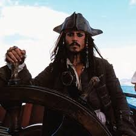
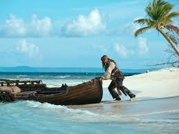
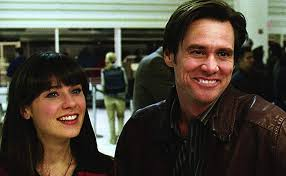
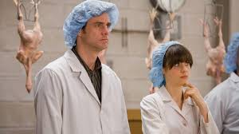
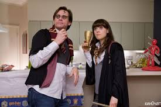
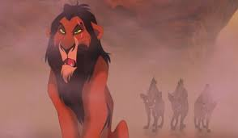
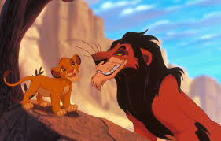
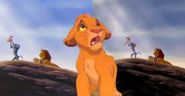

Мои любимые фильмы
Список фильмов
Пираты Карибского моря
Фильм «Пираты Карибского моря» (англ. Pirates of the Caribbean) — серия приключенческих фильмов о пиратах в Карибском море, режиссёрами которых выступили Гор Вербински (1—3 части), Роб Маршалл (4-я часть), Эспен Сандберг и Йоахим Рённинг (5-я часть). Сценарий к фильмам писали Терри Россио и Тед Эллиот (1—4 части), Джефф Натансон (5-я часть), а спродюсированы они были Джерри Брукхаймером. Фильмы были сняты после открытия аттракционов в Диснейленде, а также при поддержке кинокомпании Walt Disney Pictures. Сюжеты фильмов соединяют воедино и преобразовывают многочисленные мифы, легенды и реальные истории, связанные с кораблями и пиратами. В частности, новую интерпретацию приобретает легенда о корабле-призраке Летучем голландце. Главные герои франшизы — пиратский капитан Джек Воробей (Джонни Депп), кузнец и сын пирата Уилл Тёрнер (Орландо Блум) и дочь губернатора Элизабет Суонн (Кира Найтли). В то время как пиратский/британский капитан Гектор Барбосса (Джеффри Раш) и пиратский боцман Джошами Гиббс (Кевин МакНелли) следуют за их приключениями. Также главными героями являются в четвёртой части — Анжелика (Пенелопа Крус) и её отец Черная Борода (Иэн Макшейн), в пятой части — сын Тёрнеров Генри Тёрнер (Брентон Туэйтес), дочь Барбоссы Карина Смит (Кая Скоделарио) и заклятый враг Джека Армандо Салазар (Хавьер Бардем).
 
| Год | Страна | Жанр | Режиссер |
|---|---|---|---|
| 2003 | США | Приключения, фэнтези | Гор Вербински |
Всегда говори "Да"
Карл Аллен (Джим Керри) — нелюдимый человек, отвечающий на все жизненные вопросы «нет», очень плохо ладящий с окружающими. От него ушла жена, на работе он всегда отказывает клиентам банка в получении займов, а друзья постепенно теряют надежду вытащить его даже на свадьбу лучшего друга. Встретив однажды бывшего одноклассника, Карл узнаёт о семинаре саморазвития под названием «Да — новый вид нет». Его организатор, эксцентричный Терренс, предлагает Карлу сделку: тот будет всегда и всему в жизни говорить только «да», и его жизнь изменится к лучшему — но за каждую попытку сказать «нет» судьба будет ему жестоко мстить. Едва выйдя с семинара, Карл встречает бездомного, просящего подвезти его до парка. Карл лишается зарядки аккумулятора на телефоне, бензина и всех денег из кошелька, так как не может сказать «нет», но в результате на заправке встречает симпатичную девушку Элисон на мотороллере (Зоуи Дешанель), предложившую подвезти его до машины. Они влюбляются друг в друга, и жизнь главного героя круто идёт в гору. Его повышают в должности — начав выдавать мелкие займы людям, остро нуждающимся в деньгах, Карл становится знаменитым, а банк популярным, он участвует в экстремальных видах спорта и различных авантюрах, учится всему, что ему предлагают — от корейского языка до управления самолётом, помогает друзьям и знакомым справиться с личными проблемами, а также спасает жизнь человеку и обретает море новых друзей.
  | Год | Страна | Жанр | Режиссер |
|---|---|---|---|
| 2008 | США | Комедия, романтика | Пейтон Рид |
Король Лев
«Король Лев» (англ. The Lion King) — американский анимационный музыкальный драматический фильм о взрослении[7][8] 1994 года производства студии Walt Disney Feature Animation и выпущенный компанией Walt Disney Pictures. Это 32-й полнометражный мультфильм Disney и пятый, снятый во времена Ренессанса «Диснея». Мультфильм вдохновлён трагедией Уильяма Шекспира «Гамлет»[9] с элементами библейских историй Иосифа и Моисея, а также диснеевского мультфильма «Бэмби». Режиссёрами выступили Роджер Аллерс и Роб Минкофф, сценаристами — Ирен Меччи, Джонатан Робертс и Линда Вулвертон. Главные роли озвучивали Мэттью Бродерик, Мойра Келли, Джеймс Эрл Джонс, Джереми Айронс, Джонатан Тейлор Томас[англ.], Нейтан Лейн, Эрни Сабелла[англ.], Вупи Голдберг, Чич Марин, Роуэн Аткинсон и Роберт Гийом. Песни были написаны композитором Элтоном Джоном и поэтом Тимом Райсом, а музыка к фильму создана композитором Хансом Циммером. Мультфильм рассказывает историю Симбы, юного льва, который должен стать преемником своего отца Муфасы — короля Земель Прайда; однако после того как дядя Симбы Шрам убивает Муфасу, чтобы захватить трон, Симба чувствует себя виновным в смерти отца и бежит из Земель Прайда. Повзрослев в компании своих новых друзей — суриката Тимона и бородавочника Пумбы, — Симба получает поддержку от своей возлюбленной Налы и от королевского шамана, мандрила Рафики и возвращается в Земли Прайда, чтобы бросить вызов Шраму, положить конец его тирании и занять место в Круге жизни в качестве законного короля.
  | Год | Страна | Жанр | Режиссер |
|---|---|---|---|
| 1994 | США | Анимация, драма | Роджер Аллерс, Роб Минкофф |